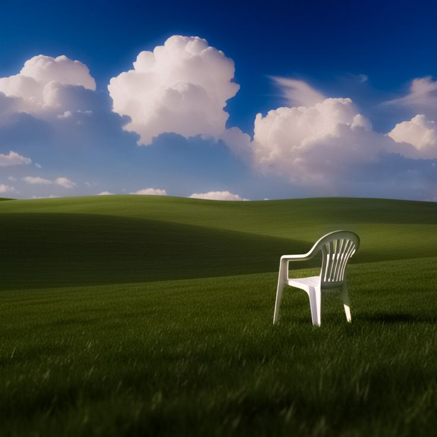

A cadeira sempre esteve aí
Alguém levantou e nunca mais voltou.
O vento não faz o menor som ao passar pela grama impecável que abriga uma simples cadeira de plástico branco no meio do nada. Você sente que deveria sentar sob essas nuvens perfeitamente desenhadas no céu azul e apenas esperar. O ambiente é iluminado e sereno demais para ser real, e a sensação constante de que você está sendo observado do alto destas colinas vazias só aumenta a cada segundo.